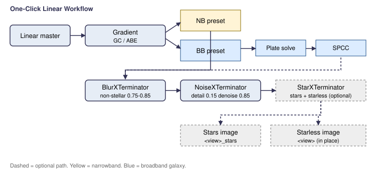

Scripts > EGo > One-Click Linear Workflow
Runs a curated linear-stage processing chain on the active view, with two presets tuned for the targets this author shoots most: narrowband nebulae (the default) and broadband galaxies.
Each step is reversible (a single Edit > Undo undoes the last process). The chain stops on the first failure or cancellation, leaving the image in a known intermediate state.

| Step | Narrowband | Broadband galaxy | Notes |
|---|---|---|---|
| 1. Gradient correction | yes | yes | Uses GradientCorrection (1.9.4+), falls back to
AutomaticBackgroundExtractor if not installed. |
| 2. Plate solve | — | yes | Launches the bundled ImageSolver script for
confirmation. |
| 3. SPCC | — | yes | Opens the
SpectrophotometricColorCalibration dialog with
broadband defaults; user picks white reference and filters. |
| 4. BlurXTerminator | yes | yes | Non-stellar sharpening 0.85 (NB) / 0.75 (BB); stellar 0.20 / 0.25. |
| 5. NoiseXTerminator | yes | yes | Detail 0.15, denoise 0.85. |
| 6. Star split (optional) | yes | yes | StarXTerminator with stars=true and
unscreen=true; produces stars and starless siblings. |
| Section | Field | Effect |
|---|---|---|
| Target type | Narrowband nebula | Skips plate solve and SPCC. BXT uses slightly stronger non-stellar sharpening. |
| Broadband galaxy | Enables plate solve and SPCC. BXT uses balanced settings. | |
| Steps | Gradient correction | Run GC (or ABE) first. |
| Plate solve | Launch ImageSolver — broadband only. | |
| SPCC | Launch the SPCC dialog for manual confirmation — broadband only. | |
| BlurXTerminator | Run BXT. | |
| NoiseXTerminator | Run NXT. | |
| Star split | Run StarXTerminator to produce stars and starless images. |
Process.executeScriptGlobal("AdP/ImageSolver") is the
documented way to launch the bundled solver from another script. If
your PI install has the script in a different category, the call
will warn and skip — solve manually, then re-run with SPCC enabled.Part of the EGo PixInsight script set. Released under the PCL License 2.0.